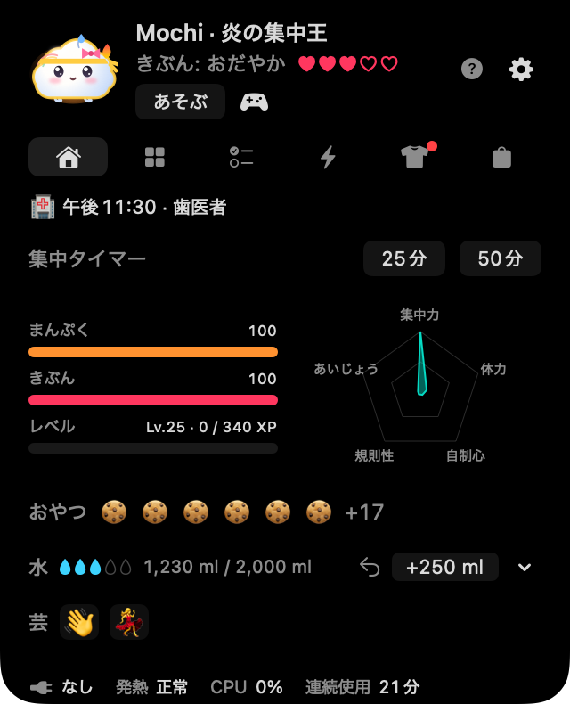
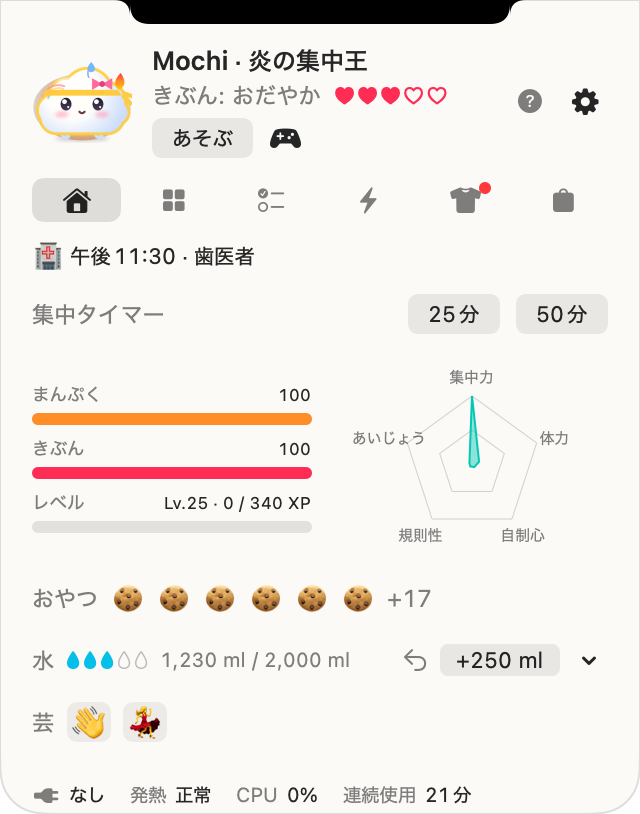
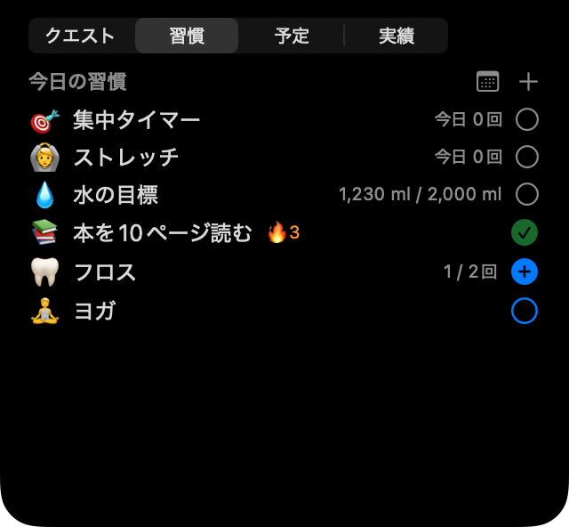

一日を見守ります
💧 水分とストレッチ
ワンクリックで1杯を記録。自分のカップを登録したり、Macから離れていたときの分も追加できます。長く座っていると伸びを勧め、25分・50分の集中タイマーもあります。
🌱 習慣と予定
回数や時間で決める自分の習慣、1か月の習慣カレンダー、リマインド付きの予定、そして（つなげれば）Macのカレンダー。
🏆 クエストと実績
毎日3つのクエスト、34の実績、週と月のチャレンジ。ごほうびのおやつで服が買えます。
🎾 あそび
なでたり、画面の上でボールを投げたり、3つのミニゲームで遊んだり。コードを交換すれば友だちとバトルも。



すべての絵はアプリの実際の描画コードで描いています。